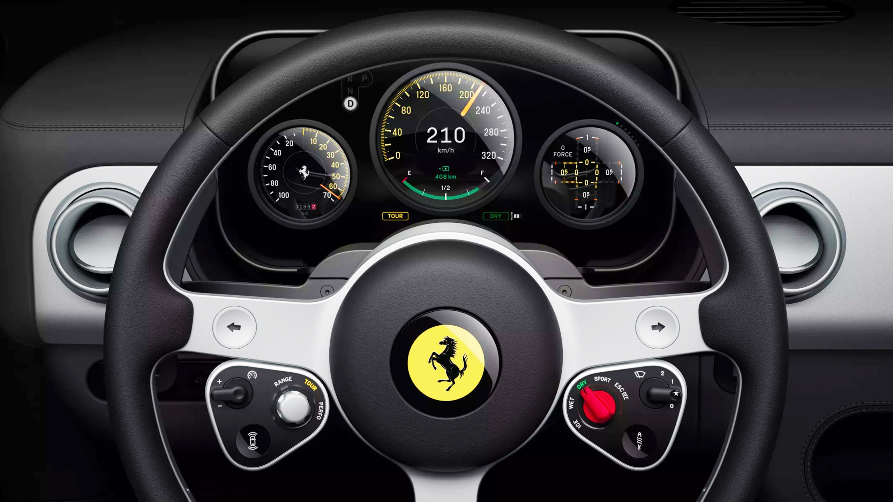

for DC Advanced UX Team.Vivi · Yohan · Libby · Lim Jisu · Katey · Anna
Latest News

Interaction
Jony Ive: touch controls don't belong in cars
The designer who put touchscreens in every pocket says they don't belong on the dashboard — Jony Ive's verdict, aired around Ferrari's Luce interior, lands as the sharpest one-liner in the buttons-versus-screens argument.
把触屏装进每个人口袋的设计师说，它不属于仪表台——乔尼·艾维借法拉利 Luce 内饰给出的论断，是按键与屏幕之争中最锋利的一句话。
터치스크린을 모두의 주머니에 넣은 장본인이 '차에는 터치가 맞지 않다'고 말한다. 페라리 Luce를 둘러싸고 나온 조니 아이브의 평결 — 버튼 대 스크린 논쟁에서 가장 날카로운 한 줄.
Mercedes heard 'too many screens' — and built one giant one
The electric C-Class answers screen fatigue with a single dashboard-wide display — Mercedes betting that the problem was seams, not glass. A direct counter-thesis to the button revival.
电动 C 级用一整块贯穿仪表台的屏幕回应「屏幕太多」——奔驰赌的是问题出在接缝而非玻璃。这是对按键复兴的正面反命题。
스크린 피로에 대한 메르세데스의 답은 대시보드 전체를 덮는 한 장의 화면. 문제는 유리가 아니라 이음새였다는 베팅 — 버튼 부활론에 대한 정면 반명제.
SAIC Volkswagen's ID.ERA 8X, debuting at Chengdu, pairs a 'Magic Screen' cluster and 15.6-inch dual-screen stack with Smart Surface displays embedded in the doors — screen real estate spreading beyond the dashboard.
BMW showed the interior of the long-wheelbase i3 built for China: the Neue Klasse screen philosophy adapted to a market that treats the rear seat as the main seat.
宝马公开中国专属长轴距 i3 内饰：新世代屏幕哲学被改写，以适配一个把后排当主座的市场。
중국 전용 롱휠베이스 i3의 실내 공개. 노이에 클라쎄의 스크린 철학이 '뒷좌석이 주인'인 시장에 맞게 번역된 사례.
Kia's Pleos Connect update rebalances touch and hard controls across its lineup — the button revival arriving not as a concept promise but as an over-the-air correction.
起亚 Pleos Connect 更新在全系重新平衡触控与实体控件——按键复兴不再是概念承诺，而是一次 OTA 修正。
터치와 물리 조작의 균형을 라인업 전체에서 다시 잡는 Pleos Connect 업데이트. 버튼 부활이 콘셉트 약속이 아니라 OTA 수정으로 도착했다.
New footage of Ferrari's EV cabin shows the retro-instrument direction in motion — physical-feeling controls and driver-centred hierarchy in the brand's first electric car.
法拉利首款电动车座舱新影像显示复古仪表方向已在运转——具备实体感的控件与以驾驶者为中心的层级。
페라리 첫 전기차 캐빈의 새 영상 — 레트로 계기 방향이 실제로 움직이는 모습. 물리감 있는 조작계와 드라이버 중심 위계.
A four-legged delivery robot with wheeled feet climbs stairs and rough terrain for last-mile drops — the delivery form factor moving past anything with handlebars.
轮足四足配送机器人能爬楼梯与烂路完成最后一程——配送形态正越过一切带车把的东西。
바퀴 달린 네 발로 계단을 오르는 라스트마일 배송 로봇. 배송의 폼팩터가 핸들바 달린 모든 것을 지나쳐 가는 중.
Chengdu 2026 in pictures: 1,600 cars, one direction
CarExpert's gallery from the 29th Chengdu show — 120 brands, 1,600 vehicles — is the fastest way to scan where Chinese exterior and cabin design just moved this season.
Plaza de Colón becomes a temporary pink landscape for ADN Fórum (September 24–27) — brand-artist collaborations staged as public space, colour as the entire identity.
Tia-Thuy Nguyen renders cloud formations in embroidery, minerals and woven steel for a China exhibition — atmosphere translated into obsessive material craft.
Es Devlin's 'Island of Light' for 500 craft artists
Homo Faber 2026 hands Venice to Es Devlin: fifteen immersive installations staging the hands and processes of 500 craft artists — scenography in service of making.
Homo Faber 2026 把威尼斯交给 Es Devlin：15 组沉浸式装置呈现 500 位匠人的双手与过程——舞美服务于「制作」本身。
베네치아를 에스 데블린에게 맡긴 호모 파베르 2026. 500명 장인의 손과 과정을 무대화한 15개의 몰입형 설치.
The Nokia Design Archive: two decades, one brick to banana
The Nokia Design Archive traces twenty years of device design — sketches, prototypes and the reasoning behind icons from the 3310 to the 8110. Product-design history as a working reference.
Volkswagen's first all-electric camper van packs a two-metre bed, climate control and solar capability — the leisure-vehicle brief rebuilt around an EV platform.
大众首款纯电露营车：2 米大床、空调与太阳能——休旅车命题在纯电平台上被重新构建。
2미터 침대, 공조, 태양광까지 얹은 폭스바겐 첫 전기 캠퍼밴. 레저 차량의 브리프가 EV 플랫폼 위에서 다시 쓰였다.
BYD revealed the Sealion 08 interior ahead of its September 2 launch — floating touchscreen, full LCD cluster, and physical buttons deliberately retained for frequent functions, wrapped in a light-beige 'Ocean Aesthetics 2.0' scheme with aviation-style second-row seats.
A walkthrough of the all-new VW ID. Polo interior shows the promised correction shipping: physical buttons and clear zoning return to the brand's smallest EV — the button comeback reaching the volume segment.
全新大众 ID. Polo 内饰实拍显示承诺的修正已落地：实体按键与清晰分区回归品牌最小电动车——按键回归抵达走量细分市场。
신형 ID. Polo 실내 리뷰 — 약속했던 교정이 실제로 출고됩니다. 물리 버튼과 명확한 조작 구역이 브랜드 최소형 EV로 복귀, 버튼 컴백이 볼륨 세그먼트까지 도달.
While Europe retreats from touch, the 2026 Corvette goes the other way — its facelift deletes the C8's button rail for screens. America's sports-car icon picking the opposite side of the industry's biggest interior argument.
A visual guide tracing motorcycle dashboards from classic analogue gauges to smart TFT clusters — useful shared vocabulary for talking about where two-wheel instrument design goes next.
一份从经典指针仪表到智能 TFT 的摩托车仪表演进图鉴——为讨论两轮仪表设计的下一步提供共同语汇。
아날로그 게이지에서 스마트 TFT까지 모터사이클 계기판의 진화를 훑는 비주얼 가이드. 이륜 계기 디자인의 다음 단계를 논할 공용 어휘.
Foster + Partners designed a retail podium system for rebranded Norton Motorcycles — machined metal stands that present bikes like sculpture. Motorcycle retail borrowing the grammar of the gallery.
Geely unveiled AI-powered off-road technology debuting in the Zhanjian 700 — terrain perception moving from driver skill to system intelligence, and one more thing the HMI must explain in real time.
吉利发布将在战舰 700 首搭的 AI 越野技术——地形感知从驾驶技巧转为系统智能，也成为 HMI 需要实时解释的又一件事。
잔젠 700에 첫 탑재될 AI 오프로드 기술. 지형 판단이 운전 기술에서 시스템 지능으로 — HMI가 실시간으로 설명해야 할 것이 하나 더 늘었다.
What GTA 6's Extended Look says about craft at scale
Creative Boom reads GTA 6's Extended Look as the decade's biggest creative launch — Vice City's light, Lucia's characterisation, and what a billion-dollar art direction pipeline looks like from outside.
PRINT Magazine's annual type report maps where typography is heading in 2026 — the reference read for this year's typeface decisions, from the publication whose layout inspired this very page.
The Xpeng Mona L05 — a 4.8m five-seater in BEV and EREV forms — was spotted ahead of a global rollout, a look at how China's youth-brand design language travels abroad.
Ricardo Luevanos' Tokyo exhibition suspends birds over broken ladders and hides portraits in mixed media — aspiration and its interruptions given physical form.
Cooper Hewitt exhibits 19th–20th century handcrafted staircase models — apprentice masterworks where craft training produced objects that now read as sculpture.
库珀·休伊特展出 19–20 世纪手工楼梯模型——学徒时代的技艺考核之作，如今读来已是雕塑。
쿠퍼 휴잇의 19–20세기 수공 계단 모형전. 도제 수련의 결과물이 이제는 조각으로 읽히는 공예의 기록.
Charlie Firth's 3D-printed table lamps pair Memphis-inspired geometry with saturated colour and visible print texture — manufacturing marks kept as the finish, not sanded away.
Charlie Firth 的 3D 打印台灯将孟菲斯式几何与高饱和色彩、可见打印纹理结合——制造痕迹被保留为饰面，而非打磨掉。
멤피스풍 기하와 채도 높은 색, 그대로 드러낸 적층 텍스처 — 제조 흔적을 지우지 않고 마감으로 삼은 3D 프린팅 램프.
Craighill's Swingtop lighter revives vintage ergonomics in die-cast stainless steel with a refillable core — an everyday object argued back into permanence.
Byunggwon Na's ALIT lamp rests a slip-cast ceramic shade on a wood column, studying translucency, reflection and diffusion — material behaviour as the entire design brief.
Byunggwon Na 的 ALIT 灯将注浆陶瓷灯罩置于木柱之上，研究半透、反射与漫射——材料行为即全部设计命题。
슬립캐스트 세라믹 셰이드를 나무 기둥에 얹어 반투명·반사·확산을 탐구한 조명. 재료의 거동 자체가 디자인 브리프.
Soia Design layers Georgian culture into the Mamuli restaurant — beehive chandeliers, peppercorn balusters, tree-trunk tables — interior as storytelling, detail by detail.
Carscoops reports Audi is walking back its all-touch cabins — rotary controls and hard keys return across upcoming models. The brand that led the screen migration now leads the retreat.
The 2026 CX-5 strips physical controls for a single large screen — Mazda, long the 'driver-first' holdout, crossing to the other side just as rivals turn back. A live A/B test across the industry.
Hyundai confirms its next-gen interiors, due from 2026, keep physical switchgear for core functions — a deliberate design position, stated publicly, against the all-screen tide.
BMW's iX3 opened to strong pre-orders in China but reports cite delivery and in-car display hurdles — a reminder that in the world's toughest cockpit market, the screen experience can make or break a launch.
Johannesburg painter Matthew Blackburn renders PlayStation controllers and Froot Loops in classical still-life technique — millennial nostalgia elevated by old-master light.
约翰内斯堡画家 Matthew Blackburn 用古典静物技法描绘 PS1 手柄与麦圈——千禧怀旧被古典大师的光线抬升。
PS1 컨트롤러와 시리얼을 고전 정물화 기법으로 그린 작업. 밀레니얼 노스탤지어가 올드마스터의 빛을 입는다.
Gabriel Diogo draws Brazil's backyard colours for Nike
São Paulo illustrator Gabriel Diogo channels football culture and warm neighbourhood palettes into commissioned work for Nike — place-specific colour as a portable brand asset.
圣保罗插画师 Gabriel Diogo 将足球文化与街区暖色调注入 Nike 委托创作——地方色彩成为可移植的品牌资产。
축구 문화와 동네의 따뜻한 색을 나이키 작업으로 옮기는 상파울루 일러스트레이터. 장소의 색이 이동 가능한 브랜드 자산이 되는 사례.
Julia Schimautz's deck animates when riffled — each card advances a sequence of colour and shape, turning a print object into a frame-by-frame motion piece.
Julia Schimautz 的纸牌在快速翻动时呈现动画——每张牌推进一格色彩与形状序列，把印刷品变成逐帧动态作品。
카드를 촤르륵 넘기면 색과 형태가 한 프레임씩 전진하며 애니메이션이 되는 덱. 인쇄물이 프레임 바이 프레임 모션이 되는 순간.
dSPACE expanded its Aurelion platform for driver-monitoring simulation — synthetic cabins and gaze scenarios for validating the cameras that will watch every future driver.
Hongqi's solar sunroof: 400 kWh a year from the roof
FAW Hongqi showed an industry-first solar sunroof producing up to 400 kWh annually — roof real estate becoming an energy surface, with obvious read-across to scooter decks and battery top-ups.
A Creative Boom essay argues unplanned encounters beat rigid research for creative discovery — a process note worth pinning above any design sprint board.
Creative Boom maps why fragmented media is pushing brands from A-list endorsements toward authentic everyday faces — with AI-generated 'perfect' imagery accelerating the hunger for real ones.
媒体碎片化正促使品牌从明星代言转向真实素人面孔——AI 生成的「完美」影像反而加剧了对真实的渴望。
파편화된 미디어가 브랜드를 A급 셀럽에서 진짜 보통 사람들로 밀어내는 흐름. AI의 '완벽한' 이미지가 오히려 진짜에 대한 갈증을 키운다.
At Edinburgh Art Festival, Ryo Yamada's timber framework marks where the ocean will one day stand — data made walkable, prediction as physical structure.
Fei Meng applies rigorous figure study and old-master light theory to character-driven editorial and advertising work — craft training as a commercial edge.
孟菲将严格的人体研究与古典光线理论用于人物驱动的编辑与广告插画——手上功夫成为商业优势。
엄격한 인체 훈련과 고전 광선 이론을 캐릭터 중심 상업 작업에 적용. 수련이 곧 경쟁력이 되는 일러스트레이션.
Jaguar Type 01: a '70s concept that reached production
Carscoops tours the Jaguar Type 01's cabin — screens tucked away, sculptural surfaces forward — an interior that reads like a 1970s concept car finally built. The strongest counter-argument yet to the screen-wall cockpit.
Carscoops 探访捷豹 Type 01 座舱：屏幕被收起，雕塑感曲面成为主角——像一台终于量产的70年代概念车。这是对「屏幕墙座舱」最有力的反论。
스크린을 숨기고 조형 면을 앞세운 실내 — 마침내 양산된 70년대 콘셉트카 같은 캐빈. 스크린 월 콕핏에 대한 가장 강력한 반론.
Geely's updated Lynk & Co 02 revealed its cabin ahead of launch — a look at how China's fast product cycles iterate screen layout and trim in a single model year.
领克 02 改款在上市前公开内饰——观察中国快节奏产品周期如何在一个年款内迭代屏幕布局与内饰件。
출시 전 공개된 링크앤코 02 개선형 실내. 중국의 빠른 제품 주기가 한 연식 안에서 스크린 레이아웃을 어떻게 갈아엎는지 보여주는 사례.
Li Auto's refreshed Mega MPV, launching September 2, leads with swiveling seats, tables and a large ceiling light — the Chinese family MPV pushing cabin design toward furniture and lighting, not just screens.
理想 Mega 改款 9 月 2 日上市：旋转座椅、桌板与大顶灯——中国家用 MPV 正把座舱设计推向家具与照明，而不只是屏幕。
회전 시트·테이블·대형 천장 조명이 주인공인 리샹 Mega 개선형. 중국 패밀리 MPV가 캐빈 디자인을 가구와 조명의 영역으로 밀고 간다.
Spy shots show the next Hyundai Tucson's dashboard dominated by a 17-inch display — the mainstream segment following the premium class into the big-screen era, for better or worse.
谍照显示下一代现代途胜的仪表台被一块 17 英寸屏主导——主流细分市场正跟随豪华阵营进入大屏时代。
차기 투싼 대시보드를 점령한 17인치 디스플레이 스파이샷. 프리미엄을 따라 대중 세그먼트까지 대화면 시대로.
Untold's rebrand: when AI illustration doesn't look like AI
The Working Assembly rebranded voice-journalling app Untold with a painterly generative-AI illustration system — Creative Boom asks whether an 'AI illustration system' is the right call even when it looks this good.
The Working Assembly 用绘画感的生成式 AI 插画系统为语音日记应用 Untold 重塑品牌——Creative Boom 追问：即便效果这么好，「AI 插画系统」是否正确？
회화적인 생성형 AI 일러스트 시스템으로 리브랜딩된 보이스 저널링 앱. 이렇게 잘 나와도 'AI 일러스트 시스템'이 옳은 선택인가라는 질문.
Illustrator Fei Meng carries classical portrait training into modern editorial and advertising work — old-master light and composition applied to commercial briefs.
插画师孟菲将古典肖像训练带入当代编辑与广告插画——古典大师的光线与构图落在商业命题上。
고전 초상화 훈련을 현대 에디토리얼·광고 일러스트로 옮겨온 작업. 올드마스터의 빛과 구도가 상업 브리프 위에 앉는다.
Berghaus: reviving the British brand everyone thinks is German
Bob Neville on rebuilding 60-year-old Berghaus through Manchester culture and heritage storytelling, including its first standalone store — brand identity work done through place, not just marks.
Bob Neville 谈以曼彻斯特文化与传承叙事重建 60 年历史的 Berghaus，并开出首家独立门店——品牌识别通过「场所」而非仅靠标志完成。
맨체스터 문화와 헤리티지 서사로 60년 브랜드를 재건하는 작업. 마크가 아니라 장소로 하는 아이덴티티.
Autovista24 weighs the industry's swing back from all-digital dashboards — regulators, safety data and driver frustration converging on the same answer as designers: keep hands on real controls.
Xiaomi's 3nm chip: the brain behind the next cockpit
Xiaomi unveiled China's first self-developed 3nm intelligent-driving chip — the silicon that will decide how much intelligence the next generation of Chinese cockpits can render on screen.
小米发布中国首款自研 3nm 智驾芯片——这块硅片将决定下一代中国座舱能在屏幕上呈现多少智能。
샤오미가 중국 첫 자체 개발 3nm 지능형 주행 칩 공개. 다음 세대 중국 콕핏이 화면에 올릴 지능의 총량을 정하는 실리콘.
Schindler treats the elevator ride as a designed journey
designboom interviews Schindler on elevating seconds of transit into a cohesive architectural experience — service design thinking applied to the most mundane vehicle we ride daily.
MG begins Tomahawk deliveries in India this September — worth watching for how its cabin and app experience are localised for a price-sensitive, two-wheeler-dominant market.
Car Design News' HMI review of the Volvo EX60 credits the software-defined platform with a calmer, clearer interface — fewer layers, faster reach to core controls, and typography doing the wayfinding.
Car Design News 评测沃尔沃 EX60 的 HMI：软件定义平台带来更平静清晰的界面——层级更少、核心控制触达更快、字体排印承担导视。
소프트웨어 정의 플랫폼이 만든 더 차분하고 명료한 인터페이스. 계층은 줄이고 핵심 조작 접근은 빠르게, 길찾기는 타이포그래피가 맡는다.
KTM revealed a new tablet-sized TFT dashboard — a motorcycle cluster large enough to rethink layout hierarchy, not just restyle gauges. Directly relevant to how our two-wheeler clusters could evolve.
Renesas' design guide for e-mobility TFT clusters walks through sunlight legibility, glance time and layout hierarchy for scooters and small EVs — an engineering-side reference for exactly our product class.
Creative Boom rounds up eight new releases — transitional serifs, slabs and expressive display families — a quick scan for anything worth testing in our interface and brand work.
StudioDBD built an identity system for Ashton-in-Makerfield's square regeneration rooted in local manufacturing heritage — place branding that starts from what a town actually made.
Bangkok illustrator Chanida Areewatanasombat processes emotion through visual diaries and surreal animation — a study in giving interior states a graphic language.
Car Design News argues autonomy's real gap is communication — how the car tells occupants and pedestrians what it is about to do. Interface design as the trust layer.
Car Design News 指出自动驾驶真正的短板是沟通——车如何告诉乘员与行人它将做什么。界面设计成为信任层。
자율주행의 진짜 공백은 소통 — 차가 탑승자와 보행자에게 다음 행동을 알리는 방식. 인터페이스가 신뢰의 레이어가 된다.
A critical look at Ferrari's Luce cabin asks whether its restrained, driver-first interface earns the 'masterclass' label — luxury HMI judged as design, not spec.
对法拉利 Luce 座舱的批评性审视：克制的、驾驶者优先的界面是否配得上「教科书」之名——以设计而非参数评判豪华 HMI。
Highlights from Pforzheim's MA degree show — the school that feeds half the industry's studios — signalling where the next generation wants to take vehicle design.
普福尔茨海姆硕士毕业展亮点——这所输送了半个行业工作室的学校，预示下一代想把汽车设计带向何方。
업계 스튜디오 절반에 인력을 대는 포르츠하임의 석사 졸업전. 다음 세대가 차량 디자인을 끌고 갈 방향의 신호.
CDN's design round-up: Genesis' flagship GV90, Bentley's Torcal material exploration and Škoda's Slavia update — three takes on how brands stretch a design language.
Lindsay Adler argues that as AI absorbs technical execution, a distinct creative viewpoint becomes the differentiator — the case for taste as the durable skill.
Lindsay Adler 认为，当 AI 吞下技术执行，独特的创作视角才是差异所在——「品味」作为持久技能的论证。
AI가 기술 실행을 흡수할수록 관점이 차별점이 된다는 주장. '취향'이 오래가는 역량이라는 논거.
Electrek's look at the Segway MAX G3 Plus highlights more range, more power and upgraded safety over the G3 — the commuter flagship maturing into a platform rather than a yearly refresh.
Electrek 评测赛格威 MAX G3 Plus：续航、动力与安全全面升级——通勤旗舰正从年度换代走向平台化演进。
G3 대비 항속·출력·안전을 끌어올린 MAX G3 Plus. 통근 플래그십이 연식 변경이 아니라 플랫폼으로 성숙해가는 흐름.
Paris now fines e-scooter riders who skip high-visibility vests, stacking onto helmet rules — rider-facing regulation is becoming part of the product experience itself.
Electrek reviews the VMAX VX2 Lite — full suspension, 25 mph and a 56-mile range claim in a portable mid-priced package aimed straight at the commuter segment we compete in.
An Electrek op-ed argues the US market is over-indexing on speed while under-building practical small electric vehicles — a framing worth stealing for product strategy conversations.
Garmin's Unified Cabin bets on one LLM for the whole car
Garmin introduced Unified Cabin 2026, headlined by an LLM-based conversational assistant that is multi-intent and multi-lingual across every seat's experience.
CBT News maps how Google, Amazon and Microsoft are becoming the default voice layer of the car — automakers gain capability but cede the customer relationship.
CBT News 梳理谷歌、亚马逊、微软如何成为汽车默认语音层——车企获得能力，却让渡了客户关系。
구글·아마존·MS가 차량의 기본 음성 레이어가 되는 흐름. 제조사는 기능을 얻고 고객 접점을 내준다.
IEEE Spectrum examines AI vehicle assistants shifting from Q&A to executing tasks in the car — the actuation authority question, now from the engineering side.
IEEE Spectrum 分析车载 AI 助手从问答走向执行任务——从工程视角审视执行权限问题。
질문 응답을 넘어 차 안에서 작업을 실행하는 어시스턴트로. 실행 권한 문제를 엔지니어링 관점에서 다룬 분석.
Bosch's AI extension platform, shown at CES, lets carmakers plug external AI services into the cockpit stack — the cockpit as an app platform rather than a sealed system.
博世在 CES 展示 AI 扩展平台，允许车企将外部 AI 服务接入座舱栈——座舱从封闭系统变为应用平台。
외부 AI 서비스를 콕핏 스택에 꽂을 수 있게 하는 확장 플랫폼. 봉인된 시스템에서 앱 플랫폼으로.
Figma Make's new properties panel and annotations bring granular, designer-familiar controls to AI-generated builds — prompt-first tools conceding that precision still needs a panel.
Figma Make 新增属性面板与批注，为 AI 生成的构建带来设计师熟悉的精细控制——提示词优先的工具承认精度仍需面板。
AI 생성 결과물에 디자이너식 정밀 컨트롤을 붙인 속성 패널·주석 추가. 프롬프트 우선 도구도 정밀도엔 패널이 필요하다는 인정.
Timbercraft: nine buildings, one joinery tradition
Jae K Kim's Timbercraft dissects nine landmark wooden buildings across China, Japan and Korea, translating traditional East Asian joinery into lessons for contemporary practice.
Jae K Kim 的《Timbercraft》解析中日韩九座木构名作，将东亚传统榫卯转译为当代实践的养分。
한·중·일 목조 건축 9곳의 결구법을 해부한 책. 전통 조인트 언어를 동시대 실무의 참조로 번역.
Studio Shoo's reflective three-legged chair uses instability and restricted movement as social commentary on expectations around women's posture — furniture as argument.
Studio Shoo 的三足镜面椅以不稳定与受限动作，评论社会对女性坐姿的期待——家具即论点。
불안정함과 제한된 움직임으로 여성의 자세에 대한 사회적 기대를 비판하는 3족 의자. 가구가 곧 논평.
The open-source CinderClock is a 3D-printed standalone alarm with a giant arcade button and swappable electronics — tactile, repairable hardware as an answer to phone dependence.
开源 CinderClock 是带巨型街机按钮、可更换电子件的 3D 打印闹钟——以可触、可修的硬件回应手机依赖。
대형 아케이드 버튼을 내리쳐 끄는 오픈소스 3D 프린팅 알람시계. 폰 의존에 대한 촉각적·수리 가능한 하드웨어의 답.
Sonos crams eight powered channels into a fanless amp
Sonos's new multi-channel amplifier drives eight powered channels from a compact fanless GaN design — power electronics shrinking until the hardware disappears into the room.
Sonos 新款多声道功放以无风扇 GaN 架构驱动八个声道——功率电子不断缩小，硬件消隐于房间之中。
팬리스 GaN 설계로 8채널을 구동하는 소형 앰프. 전력 전자의 소형화가 하드웨어를 공간 속으로 지워가는 사례.
Bird and Segway announced a partnership to roll out a next-generation shared micromobility fleet across North America, putting Segway's commercial-grade vehicles and connected platform at the core of Bird's operations.
Segway put the Ninebot S2 kids' self-balancing scooter on pre-order at $350 after a $100 launch discount — extending the self-balancing line down to its youngest riders yet.
Toronto police launched an enforcement campaign against e-bikes and e-scooters evading local laws — another sign that micromobility's regulatory honeymoon is ending in big cities.
多伦多警方针对规避法规的电动自行车与滑板车展开执法行动——大城市对微出行的监管蜜月期正在结束。
토론토 경찰이 법규를 피해 다니는 전기자전거·킥보드 단속에 착수. 대도시에서 마이크로모빌리티 규제 유예기가 끝나가는 신호다.
LG showed a system that merges the head-up display with the virtual cockpit screen, collapsing two separate display domains into one continuous driver surface.
LG 展示了将抬头显示与虚拟座舱屏融合的系统，把两个独立显示域合并为一个连续的驾驶员界面。
HUD와 버추얼 콕핏 스크린을 하나로 합친 시스템. 분리돼 있던 두 디스플레이 영역이 하나의 연속된 운전자 화면이 된다.
GM rolled out a software update refining Cadillac's freeform infotainment interface — evidence that carmakers now iterate cabin UI like an app, not a model-year feature.
FEV and Microsoft are integrating small language models for offline in-vehicle intelligence with Nvidia GPU acceleration — voice that keeps working when connectivity doesn't.
Over 50 AI agent skills are now live in Figma Community, and designers can package their own file context into reusable skills and publish them — a skills economy forming inside the design tool.
Figma 社区已上线 50 多个 AI 智能体技能，设计师可将文件上下文打包成可复用技能并发布——设计工具内部正在形成技能经济。
피그마 커뮤니티에 AI 에이전트 스킬 50여 개 등록. 자기 파일 컨텍스트로 스킬을 만들어 배포까지 가능 — 툴 안에 스킬 생태계가 형성되는 중.
Watti is a five-axis robotic desk lamp with computer vision that reads workspace activity and repositions its light autonomously — ambient sensing arriving at the smallest scale of product.
Yanfeng's XiM27 smart cabin concept pairs a reconfigurable interior layout with AI-adaptive seating — the cabin as a responsive product rather than fixed architecture.
延锋 XiM27 智能座舱概念将可重构布局与 AI 自适应座椅结合——座舱成为会响应的产品，而非固定结构。
재구성 가능한 실내 레이아웃과 AI 적응형 시트를 결합한 스마트 캐빈 콘셉트. 고정 구조가 아니라 반응하는 제품으로서의 실내.
Figma's responsive spacing update adds Around and Evenly distribution to auto layout alongside the renamed Between — closing another gap between design files and CSS flexbox reality.
Figma 自动布局新增 Around 与 Evenly 分布选项（原默认更名为 Between）——设计文件与 CSS Flexbox 的差距再缩一步。
오토 레이아웃에 Around·Evenly 분배 추가(기존 기본값은 Between으로 개명). 디자인 파일과 CSS 플렉스박스 사이 간극이 또 하나 줄었다.
Figma's MCP server now lets Weave tools run directly from ChatGPT, Claude or Cursor — production design operations triggered from a chat window without opening Figma.
Kraft Heinz and Beta Design Office made a limited-edition adjustable ketchup lid with three flow settings — a masterclass in solving a universal micro-frustration with one moving part.
Huawei's Pura 90s Pro Max: CMF as comeback strategy
Yanko's review of the Huawei Pura 90s Pro Max centres on its dual-tone gradient finish — a case study in using CMF to carry a flagship's identity when the spec sheet can't.
Yanko 对华为 Pura 90s Pro Max 的评测聚焦其双色渐变工艺——当参数无法取胜时，用 CMF 承载旗舰身份的案例。
듀얼톤 그라데이션 마감이 핵심인 리뷰. 스펙으로 못 이길 때 CMF가 플래그십의 정체성을 떠받치는 전략 사례.
A design concept turns the traditional Korean gat hat into a lighting fixture with a storage tray — heritage form language translated into a contemporary object.
设计概念将韩国传统斗笠「갓」转化为带收纳托盘的灯具——传统形态语言翻译成当代物件。
전통 갓의 형태를 수납 트레이가 달린 조명으로 번역한 콘셉트. 유산의 조형 언어를 동시대 오브제로 옮긴 작업.
LA studio Waka Waka bent saturated, Edo-period-inspired coloured metal into the undulating Ribbon furniture collection for Japanese manufacturer Benex.
洛杉矶工作室 Waka Waka 以江户时代色彩为灵感，将高饱和金属弯折成起伏的 Ribbon 家具系列，由日本制造商 Benex 出品。
에도 시대 색채에서 가져온 고채도 금속을 물결치듯 구부린 리본 가구 컬렉션. 색과 곡면이 곧 조형인 작업.
CES 2026 scooters: phone-grade UX arrives on the deck
GOTRAX put Apple Find My and NFC unlocking on the GX3, Segway showed the Ninebot KickScooter MAX G3, and INMOTION drew attention with a claimed 94 mph RS PRO prototype. Onboard UX is becoming a spec line, not an afterthought.
GOTRAX GX3 加入 Apple Find My 与 NFC 解锁，九号展出 KickScooter MAX G3，INMOTION 以宣称 94 英里/时的 RS PRO 原型引发关注。车载体验正成为参数表上的一项。
GOTRAX GX3는 애플 Find My와 NFC 잠금해제를 탑재, 세그웨이는 Ninebot KickScooter MAX G3 공개, INMOTION은 시속 94마일 주장 프로토타입으로 주목. 온보드 UX가 스펙 항목이 되는 중.
Euro NCAP is tying safety ratings to interaction design: cars that bury core functions like wipers, hazard lights and indicators in touchscreen menus will lose points. Physical controls become a scoring requirement, not a styling choice.
Euro NCAP 将交互设计纳入安全评分：把雨刷、双闪、转向灯等核心功能埋进触屏菜单的车型将被扣分。实体控件从造型选择变成评分硬性要求。
유로 NCAP이 인터랙션 설계를 안전 등급에 연동. 와이퍼·비상등·방향지시등을 터치 메뉴에 묻은 차는 감점. 물리 조작계가 스타일 선택이 아니라 평가 요건이 됨.
Rivian ships an assistant that drives the car, not just talks
"Hey Rivian" rolled out with software 2026.15, giving voice control over vehicle functions rather than search and media alone. It is one of the first shipping cases of an in-car agent with real actuation authority.
Volkswagen's design chief confirmed physical buttons and knobs are returning, starting with the ID. Polo — "it's a car, not a phone." A direct correction to touch-only interiors.
大众设计负责人确认实体按键与旋钮回归，将从 ID. Polo 开始——「这是车，不是手机。」这是对纯触控内饰的直接修正。
LG Display won a CES 2026 Innovation Award for an OLED that feeds driving data to the driver and entertainment to the passenger from a single panel. Its UDC-IR OLED hides the driver-monitoring infrared camera under the screen.
LG Display 凭双视角 OLED 斩获 CES 2026 创新奖：同一面板可同时向驾驶员显示行车信息、向乘客播放娱乐内容；UDC-IR OLED 将红外监测摄像头置于屏下，不损画质。
한 패널로 운전자·동승자에게 서로 다른 화면을 동시 출력. 운전자 모니터링 IR 카메라는 화면 아래 내장해 화질 손실이 없음.
QuadAlliance drives holographic windshields to production
ZEISS, tesa, Saint-Gobain Sekurit and Hyundai Mobis formed the QuadAlliance to industrialise full-windshield holographic displays — a 1.2L optical engine at over 95% transparency.
K-Display 2026: 48-inch dashboards vs the Big Hole fascia
LG Display showed a 48-inch pillar-to-pillar dashboard with split-screen and an 18-inch slidable rear-seat panel. Samsung Display countered with an 80mm "Big Hole" fascia that reintegrates gear shift and vents into the screen, plus a slidable panel expanding to 15.5 inches.
LG Display 展出 48 英寸贯穿式仪表台（支持分屏）与 18 英寸后排可滑动屏；三星显示则推出 80mm「大孔」中控，将换挡与出风口重新整合进屏幕，另有可扩展至 15.5 英寸的滑动屏。
BMW is fitting its 2026 line with an assistant built for natural phrasing rather than fixed commands, part of a broader shift where the cockpit's primary input becomes speech.
AUO spins out AMSC — from panels to whole cockpits
AUO launched AUO Mobility Solutions Corp., bundling displays with climate control and HMI design into system-integrated cockpits, debuting at CES 2026.
友达成立 AUO Mobility Solutions，将显示、空调与 HMI 设计整合为座舱系统方案，并于 CES 2026 亮相。
패널 공급사에서 콕핏 시스템 통합업체로 전환. 디스플레이+공조+HMI 설계를 묶어 판매하는 구조.
Figma Config 2026 brings motion and code onto the canvas
Figma Motion adds keyframes, easing and spring animation with production-ready export in Dev Mode. Code Layers goes further — clone a repository and pull real interaction flows in as inspectable layers, convertible both ways.
Figma Motion 引入关键帧、缓动与弹簧动画，并可在 Dev Mode 导出可用代码；Code Layers 更进一步，可克隆代码仓库、将真实交互流程作为可检视图层引入，并支持双向转换。
Figma Motion이 키프레임·이징·스프링 애니메이션과 Dev Mode 코드 내보내기를 지원. Code Layers는 저장소를 클론해 실제 인터랙션 플로우를 검사 가능한 레이어로 가져오고 양방향 변환까지 제공.
Config 2026 also opened the agent up: teams can turn their own workflows into reusable skills, connect external tools over MCP, pull live data from the web, and see each other's agent conversations by default.
Config 2026 同时开放了 AI 智能体：团队可将自身工作流转为可复用技能、通过 MCP 连接外部工具、从网络获取实时数据，且智能体对话默认全员可见。
팀의 작업 흐름을 재사용 가능한 스킬로 만들고, MCP로 외부 도구를 연결하고, 웹에서 실시간 데이터를 가져오며, 에이전트 대화가 기본적으로 팀에 공개됨.
IKEA's limited Konstrunda collection puts 22 collectible pieces by seven international designers on shelves "at a price that people can afford" — a deliberate play to democratise design objects usually priced as art.
A survival game about surviving a heatwave, no AC allowed
Blue Hood Games' Europe Heatwave Simulator makes players endure 14 days in a Paris flat without air-conditioning — a darkly comic piece of climate commentary built as an interactive experience.
Blue Hood Games 的《欧洲热浪模拟器》让玩家在没有空调的巴黎公寓里熬过 14 天——以互动体验呈现的黑色幽默气候评论。
에어컨 없는 파리 아파트에서 14일을 버티는 시뮬레이터. 기후 문제를 인터랙티브 경험으로 풀어낸 블랙코미디형 작업.
Xiaomi's $121 capsule machine: ecosystem CMF at work
Xiaomi's Mijia capsule coffee machine lands at $121 with Italian pump internals and a magnetic capsule rack that clips to a fridge — another case of the ecosystem brand's cost-down, detail-up industrial design.
A ferry you crank by hand — mobility stripped to zero UI
Tilburg installed a hand-cranked floating crossing that moves cyclists over the Piushaven on submerged chains — no motor, no schedule, no interface. Mobility design reduced to a single physical control.